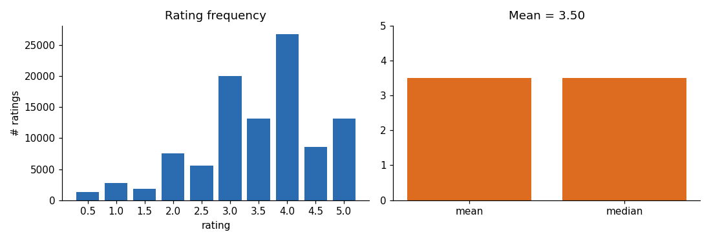
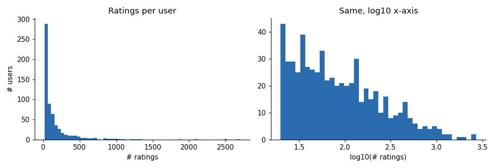
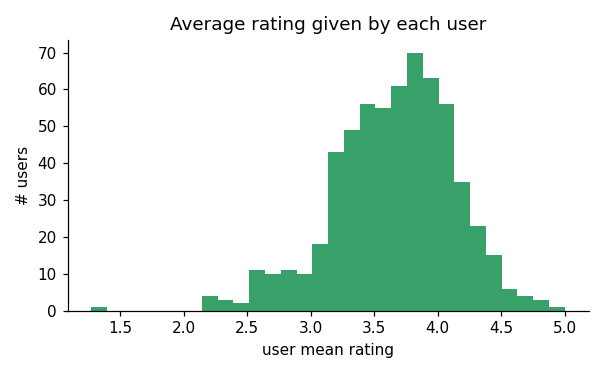
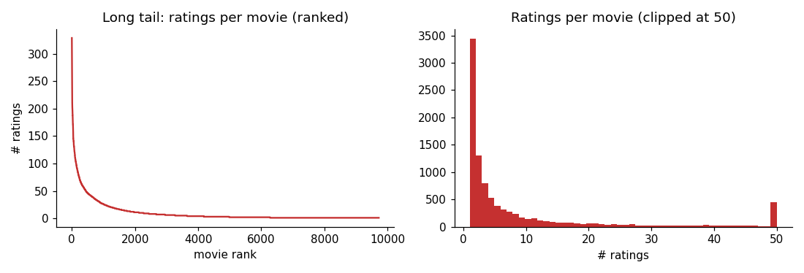
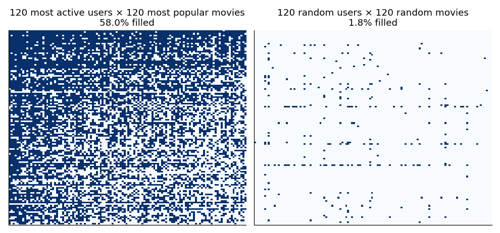

ACM Workshop · Recommender Systems · Day 1 · 09:45–10:45
Understand the data the recommender will be built from.
Lab1_EDA.ipynbpandas numpy matplotlib scikit-learnscikit-surprise (needed in Lab 3)data/import pandas as pd, numpy as np
import matplotlib.pyplot as plt
print(pd.__version__, np.__version__)
import surprise; print(surprise.__version__)!pip install scikit-surprise (or numpy<2)ratings = pd.read_csv(DATA / "ratings.csv")
movies = pd.read_csv(DATA / "movies.csv")
ratings.head() userId movieId rating timestamp
0 1 1 4.0 964982703
1 1 3 4.0 964981247
2 1 6 4.0 964982224
3 1 47 5.0 964983815
4 1 50 5.0 964982931MovieLens latest-small: 100,836 ratings · 610 users · 9,724 movies · 1996–2018 · every user has ≥ 20 ratings
print("ratings:", ratings.shape, "| movies:", movies.shape)
ratings.info()
n_users, n_items, n_ratings = ratings.userId.nunique(), ratings.movieId.nunique(), len(ratings)ratings: (100836, 4) | movies: (9742, 3)
users : 610
movies : 9,724 (catalogue has 9,742; some are never rated)
ratings : 100,836ratings.isnull().sum()
ratings.duplicated().sum()
ratings.duplicated(["userId", "movieId"]).sum() # the important one
ratings.describe().round(2)missing values per column: all 0
fully duplicated rows : 0
duplicate (user, movie) pairs: 0
rating min 0.5 25% 3.0 50% 3.5 75% 4.0 max 5.0 mean 3.50

count 610
mean 165.3
median 70.5
min 20
max 2698
Top 10% of users → 48% of ratings

ratings per movie:
median 3 · mean 10.4 · max 329
35% of movies have exactly 1 rating
Most rated: Forrest Gump (329),
Shawshank (317), Pulp Fiction (307)Lamerica (1994) n=2 5.0
Heidi Fleiss: Hollywood Madam n=2 5.0
Awfully Big Adventure, An n=1 5.0
Live Nude Girls (1995) n=1 5.0Shawshank Redemption n=317 4.43
Godfather, The n=192 4.29
Fight Club n=218 4.27
Cool Hand Luke n=57 4.27for k in [1, 5, 10, 20]:
print(f"movies with <= {k:>2} ratings: {(per_item <= k).sum():>5,} ({(per_item <= k).mean():.1%})")movies with <= 1 ratings: 3,446 (35.4%)
movies with <= 5 ratings: 6,456 (66.4%)
movies with <= 10 ratings: 7,603 (78.2%)
movies with <= 20 ratings: 8,489 (87.3%)
movies in the catalogue with ZERO ratings: 18user_item = ratings.pivot_table(index="userId", columns="movieId", values="rating")
print(user_item.shape)
print(f"sparsity: {1 - user_item.notna().sum().sum() / user_item.size:.2%} of the matrix is EMPTY")(610, 9724)
possible cells : 5,931,640
observed cells : 100,836
sparsity : 98.30% of the matrix is EMPTY
from sklearn.model_selection import train_test_split
train, test = train_test_split(ratings[["userId","movieId","rating"]], test_size=0.2, random_state=42)
train.to_csv(PROC/"train.csv", index=False); test.to_csv(PROC/"test.csv", index=False)train: 80,668 test: 20,168
test rows whose user is unseen in train: 0
test rows whose movie is unseen in train: 813 (4.0%)| We found | It means | Where it matters |
|---|---|---|
| 98.3% of matrix empty | sparsity | Similarity (Lab 2), MF (Lab 3) |
| Power users, long tail | popularity bias | Top-N lists, evaluation |
| User & item averages differ | biases | mean-centring, bu, bi |
| 35% of movies: 1 rating | cold start | support thresholds, hybrids |
| Global mean RMSE ≈ 1.05 | baseline to beat | all later labs |
☕ Break 10:45–11:00 → then Collaborative Filtering theory
“How can we fill those empty cells using other users’ behaviour?”